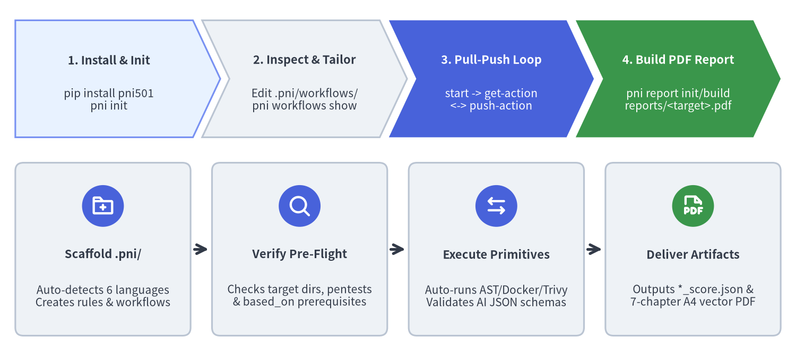
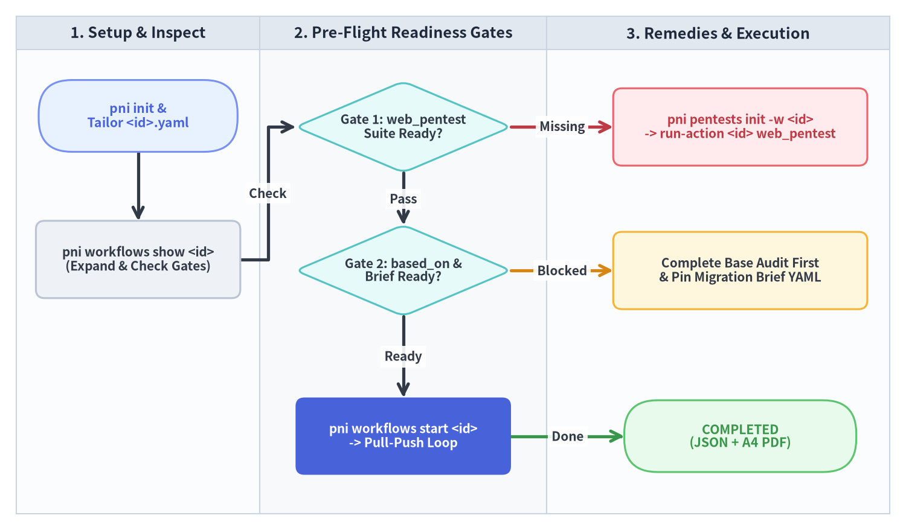

クイックスタートガイド
数分で pni501 (v0.1.3) の導入から初回レポート生成までを体験できます。本ガイドでは、CLI のインストール、対象リポジトリでの .pni/ 初期化、Pre-Flight 準備ゲートの確認、そしてステートフル Pull-Push ワークフローループを実行して7軸スコア JSON と7章構成 A4 PDF レポートを生成するまでの手順を解説します。

Source Code
from drawlib.canvas import save, setup
from drawlib.icons import phosphor
from drawlib.smartarts import CardList, ChevronProcess
from drawlib.styles import Styles
setup(width=156, height=70, dpi=150)
pipeline = ChevronProcess(
style=Styles.PrimaryNeutral,
text_style=Styles.DarkBold.patch(text_size=10.5),
description_style=Styles.Dark.patch(text_size=10.0),
corner_angle=65.0,
spacing=1.8,
flat_left_end=True,
)
pipeline.add(
"1. Install & Init",
description="pip install pni501\npni init",
)
pipeline.add(
"2. Inspect & Tailor",
description="Edit .pni/workflows/\npni workflows show",
style=Styles.Neutral,
)
pipeline.add(
"3. Pull-Push Loop",
description="start -> get-action\n<-> push-action",
style=Styles.PrimaryFlat,
text_style=Styles.WhiteBold.patch(text_size=10.5),
description_style=Styles.White.patch(text_size=10.0),
)
pipeline.add(
"4. Build PDF Report",
description="pni report init/build\nreports/<target>.pdf",
style=Styles.SuccessFlat,
text_style=Styles.WhiteBold.patch(text_size=10.5),
description_style=Styles.White.patch(text_size=10.0),
)
pipeline.draw(xy=(3.0, 43.0), width=150.0, height=23.0)
commands = CardList(
style=Styles.Neutral.patch(shape_r=1.6),
text_style=Styles.DarkBold.patch(text_size=10.5),
description_style=Styles.Dark.patch(text_size=10.0),
badge_shape="circle",
badge_style=Styles.PrimaryFlat,
badge_text_style=Styles.WhiteBold.patch(text_size=10.0),
icon_style=Styles.WhiteBold,
direction="horizontal",
show_arrows=True,
arrow_style=Styles.DarkBold,
spacing=3.0,
)
commands.add(
"Scaffold .pni/",
"Auto-detects 6 languages\nCreates rules & workflows",
icon=phosphor.folder_plus,
)
commands.add(
"Verify Pre-Flight",
"Checks target dirs, pentests\n& based_on prerequisites",
icon=phosphor.magnifying_glass,
)
commands.add(
"Execute Primitives",
"Auto-runs AST/Docker/Trivy\nValidates AI JSON schemas",
icon=phosphor.arrows_left_right,
)
commands.add(
"Deliver Artifacts",
"Outputs *_score.json &\n7-chapter A4 vector PDF",
badge_style=Styles.SuccessFlat,
icon=phosphor.file_pdf,
)
commands.draw(xy=(3.0, 4.0), width=150.0, height=34.0)
save()
1. 前提条件とインストール
pni501 の実行には Python 3.11 以上（>=3.11）が必要です。また、隔離コンテナでのランタイム検証（run_check）、脆弱性スキャン（security_scan）、およびループバック Web ペネトレーションテスト（web_pentest）を実行する場合は、ホスト環境に Docker がインストールされている必要があります。
pip または uv を使用して PyPI から pni501 をインストールし、バージョンを確認します：
# 方法 A: pip でインストール
pip install pni501
# 方法 B: uv プロジェクトまたはツール環境に追加
uv add pni501
# インストールの確認と CLI サブコマンド一覧の表示
pni version
pni --help
2. ステップ 1：対象リポジトリで .pni/ を初期化する
評価対象となるリポジトリのルートディレクトリに移動し、pni init を実行します：
pni init
pni init はマニフェストファイル（pyproject.toml、pom.xml、build.gradle、composer.json、go.mod、package.json、tsconfig.json）から対象リポジトリの主言語（Python、Java、PHP、Go、TypeScript、JavaScript）を自動検出し、.pni/ ワークスペースディレクトリを生成します：
.pni/pni.toml— デフォルトの対象ディレクトリ（[targets]）および Drawlib レポート設定（[report]）を管理するプロジェクト設定ファイル。.pni/workflows/full_audit.yaml&quick_check.yaml— 自動検出された言語に対応するステートフルワークフロー定義（6言語の組み込みワークフローセット からコピー）。.pni/rules/&.pni/actions/— カスタムルールおよびコンポジットアクションのローカル上書き用ディレクトリ。.pni/instructions.md— Code AI Agent 向けのブートストラップ手順書。
3. ステップ 2：ターゲット設定の確認と Pre-Flight 準備ゲートの検証
ワークフローを開始する前に、.pni/workflows/<id>.yaml 内の targets.root、targets.source、targets.tests、targets.docs が実際のリポジトリ構造と一致していることを確認し、pni workflows show <id> を実行して正規化されたプリミティブステップと Pre-Flight 準備ゲートを検査します：
# ワークフロー一覧の表示と、正規化ステップ・Pre-Flight 状態の検査
pni workflows list
pni workflows show full_audit

Source Code
from drawlib.canvas import save, setup
from drawlib.diagrams.flow import Decision, End, FlowDiagram, Process, Start
from drawlib.styles import Styles
setup(width=164, height=96, dpi=150)
flow = FlowDiagram(
node_style=Styles.WhiteBordered.patch(
text_color=Styles.Dark.text_color, shape_r=1.6, text_size=10.0
),
edge_style=Styles.DarkBold,
edge_text_style=Styles.DarkBold.patch(text_size=10.0),
width=158.0,
height=90.0,
)
flow.add_lane("1. Setup & Inspect", width=44.0)
flow.add_lane("2. Pre-Flight Readiness Gates", width=52.0)
flow.add_lane("3. Remedies & Execution", width=62.0)
n_init = flow.add(
Start(
"pni init &\nTailor <id>.yaml",
width=36.0,
height=13.0,
style=Styles.PrimaryNeutral.patch(shape_r=6.0),
text_style=Styles.PrimaryBold.patch(text_size=10.2),
),
xy=(22.0, 72.0),
)
n_show = flow.add(
Process(
"pni workflows show <id>\n(Expand & Check Gates)",
width=37.0,
height=14.0,
style=Styles.Neutral.patch(shape_r=1.6),
text_style=Styles.DarkBold.patch(text_size=10.0),
),
xy=(22.0, 46.0),
)
g_pentest = flow.add(
Decision(
"Gate 1: web_pentest\nSuite Ready?",
width=39.0,
height=16.5,
style=Styles.SecondaryNeutral,
text_style=Styles.DarkBold.patch(text_size=10.0),
),
xy=(70.0, 70.0),
)
r_pentest = flow.add(
Process(
"pni pentests init -w <id>\n-> run-action <id> web_pentest",
width=46.0,
height=14.0,
style=Styles.DangerNeutral.patch(shape_r=1.6),
text_style=Styles.DangerBold.patch(text_size=10.0),
),
xy=(131.0, 70.0),
)
g_based = flow.add(
Decision(
"Gate 2: based_on &\nBrief Ready?",
width=39.0,
height=16.5,
style=Styles.SecondaryNeutral,
text_style=Styles.DarkBold.patch(text_size=10.0),
),
xy=(70.0, 44.0),
)
r_based = flow.add(
Process(
"Complete Base Audit First\n& Pin Migration Brief YAML",
width=46.0,
height=14.0,
style=Styles.WarningNeutral.patch(shape_r=1.6),
text_style=Styles.DarkBold.patch(text_size=10.0),
),
xy=(131.0, 44.0),
)
n_start = flow.add(
Process(
"pni workflows start <id>\n-> Pull-Push Loop",
width=39.0,
height=14.0,
style=Styles.PrimaryFlat.patch(shape_r=1.6),
text_style=Styles.WhiteBold.patch(text_size=10.0),
),
xy=(70.0, 14.0),
)
n_done = flow.add(
End(
"COMPLETED\n(JSON + A4 PDF)",
width=42.0,
height=13.0,
style=Styles.SuccessNeutral.patch(shape_r=6.0),
text_style=Styles.SuccessBold.patch(text_size=10.2),
),
xy=(131.0, 14.0),
)
n_init.connect(n_show, start_side="bottom", end_side="top")
n_show.connect(g_pentest, label="Check", start_side="right", end_side="left")
g_pentest.connect(r_pentest, label="Missing", start_side="right", end_side="left", style=Styles.DangerBold)
g_pentest.connect(g_based, label="Pass", start_side="bottom", end_side="top")
g_based.connect(r_based, label="Blocked", start_side="right", end_side="left", style=Styles.WarningBold)
g_based.connect(n_start, label="Ready", start_side="bottom", end_side="top")
n_start.connect(n_done, label="Done", start_side="right", end_side="left", style=Styles.SuccessBold)
flow.draw(xy=(3.0, 3.0))
save()
ワークフローに動的 Web ペネトレーションテスト（uses: web_penetration_audit）が含まれる場合は、ステートフル実行を開始する前にペネトレーションテストスイートを初期化・単体検証します：
# .pni/pentests/<target>/ を生成し、SQLite 準備なしで単体ステップを直接テスト
pni pentests init -w full_audit
pni workflows run-action full_audit web_pentest
4. ステップ 3：ステートフル Pull-Push ループの実行
ワークフローを開始して .pni/cache/workflow_state.db にセッション（wf-<8hex>）を作成し、get-action と push-action を繰り返します：
# 1. ステートフルワークフローを開始（過去の未完了ランをキャンセルする場合は --supersede を付与）
pni workflows start full_audit --supersede
# 2. 現在のアクションを取得（決定論的アナライザを自動実行し、要求 JSON Schema を出力）
pni workflows get-action wf-1a2b3c4d
# 3. 現在のアクション ID (例: act-01) に対して検証済み AI JSON ペイロードを提出
pni workflows push-action wf-1a2b3c4d act-01 --file payload.json
# 4. 任意のタイミングでステップ進捗状況を確認
pni workflows status wf-1a2b3c4d
Pull-Push ループ中、エンジンは以下の処理を自動で行います：
- 決定論的プリミティブの自動実行：
get-actionがproject_inspect、ast_analyze、run_check、security_scan、web_pentest、migration_analyze、またはprogress_analyzeに到達すると、pniは即座に解析器を実行して.pni/cache/<workflow_id>/facts.jsonに結果を保存し、次の AI ステップへと進めます。 - Push 時の厳格なスキーマ・実在パス検証：
record_architecture、ai_interpret、emit_score、emit_migration_plan、emit_progressでは、push-actionが Pydantic モデル検証とmodule_inventory上のファイルパス実在確認を実施します。
5. ステップ 4：Drawlib ビジュアル PDF レポートのビルド
最終ステップの write_drawlib_report では、7章構成の Drawlib レポートプロジェクトを初期化し、座標グリッド（-g）による視覚検証を行った上で A4 ベクター PDF をビルドして完了報告を提出します：
# reports_src/full_audit_src/ を初期化し、reports/full_audit.pdf をコンパイル
pni report init full_audit --src-dir reports_src --lang en --style google
pni report build full_audit --src-dir reports_src --output-dir reports
# 最終完了ペイロードを提出してワークフローを COMPLETED に遷移
pni workflows push-action wf-1a2b3c4d act-12 '{"generated_files": ["reports/full_audit.pdf"], "summary": "Compiled 7-chapter A4 PDF report."}'
続いて 3つの主要ユースケース または ワークフローと Pre-Flight ゲート に進んでください。